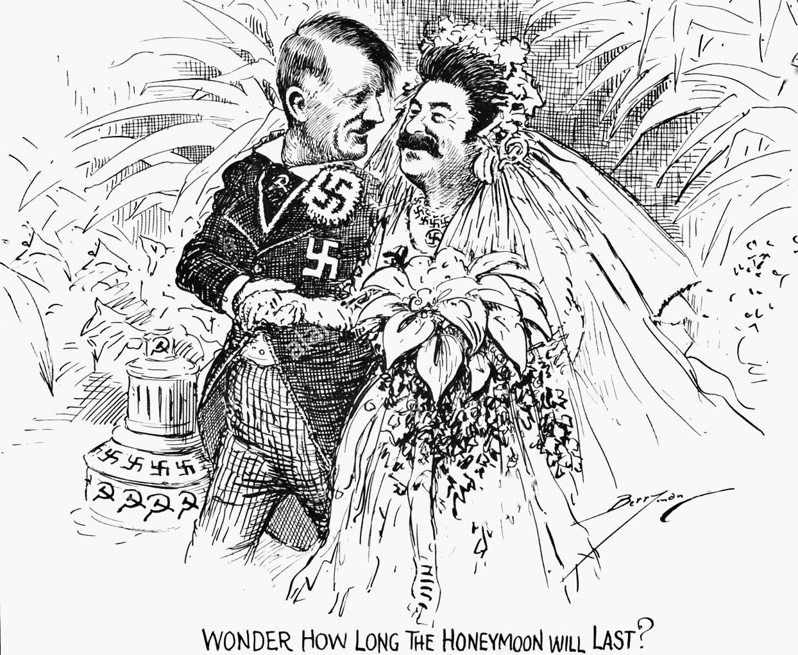
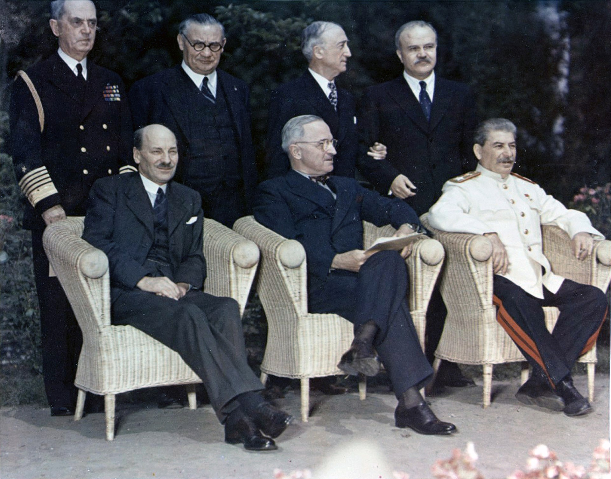

World War II
1939–1941: Pact with Nazi Germany
As a Marxist–Leninist, Stalin anticipated conflict among capitalist powers. In 1938, foreseeing war as Nazi Germany expanded, he aimed for Soviet dominance in Europe. Despite facing threats from Germany and Japan, Stalin rapidly built up the Red Army from January 1939 to June 1941, exacerbating officer shortages through purges. With Britain and France hesitant to form an alliance, Stalin, leaning toward Germany, replaced his foreign minister with Vyacheslav Molotov in May 1939. The Molotov–Ribbentrop Pact in August 1939 divided Eastern Europe. As Germany invaded Poland, the Soviets entered eastern Poland, exchanging territories and undermining the British blockade. The Winter War with Finland followed Soviet demands, leading to initial setbacks but maintaining Finland's independence. In June 1940, the Red Army occupied the Baltic states, annexing them. The Soviets also invaded and annexed parts of Romania, implementing mass repressions. The swift German victory in France surprised Stalin, prompting appeasement efforts. In April 1941, the USSR signed a neutrality pact with Japan. Concerned about deteriorating relations, Stalin became Premier in May 1941.
1941–1942: German invasion
In June 1941, Germany invaded the Soviet Union, catching Stalin off guard. Forming the State Defense Committee, Stalin became the Supreme Commander. The German blitzkrieg devastated Soviet forces in the western borderlands. By July, the Germans occupied Ukraine, Belarus, and the Baltic states. Leningrad faced a siege, and Moscow was bombed. Stalin resisted evacuation, relying on a scorched earth policy and brutal orders, including executing political prisoners. The Battle of Moscow halted the German advance in harsh weather. Despite setbacks, Stalin focused on attacking rather than defensive strategies. His policies led to the Soviet victory at Stalingrad in February 1943, a turning point in the war. Stalin exploited Nazi atrocities, forming the Jewish Anti-Fascist Committee.
1942–1945: Soviet counter-attack
By late 1942, the Soviets repulsed Germany's southern campaign. The Battle of Kursk thwarted a German encirclement attempt. By the end of 1943, the Soviets regained half of the occupied territory. Stalin's industrial focus in central Russia contributed to their military success. Stalin's image improved globally, and alliances with the UK and US strengthened. In 1944, Soviet advances in Eastern Europe continued. The Yalta Conference in 1945 solidified agreements for post-war Germany and Poland. Stalin's territorial demands were met, and he focused on capturing Berlin. The war ended in May 1945, with the Soviet Union emerging victorious.
1945: Victory 
The Red Army seized Berlin in April 1945, and Germany surrendered in May. Stalin aimed to capture Hitler alive but settled for his remains. The discovery of Nazi extermination camps shocked the world. Stalin shifted attention to the war with Japan, invading Manchuria in August 1945. The Potsdam Conference addressed post-war issues, with Stalin seeking reparations and influence in Eastern Europe. Germany was divided into zones, and tensions between Stalin and the Western Allies emerged.